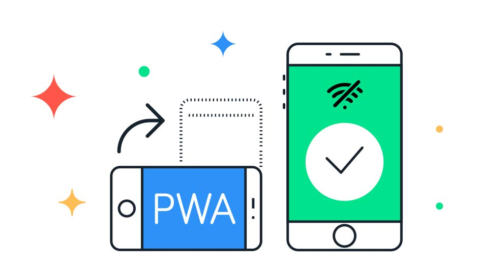
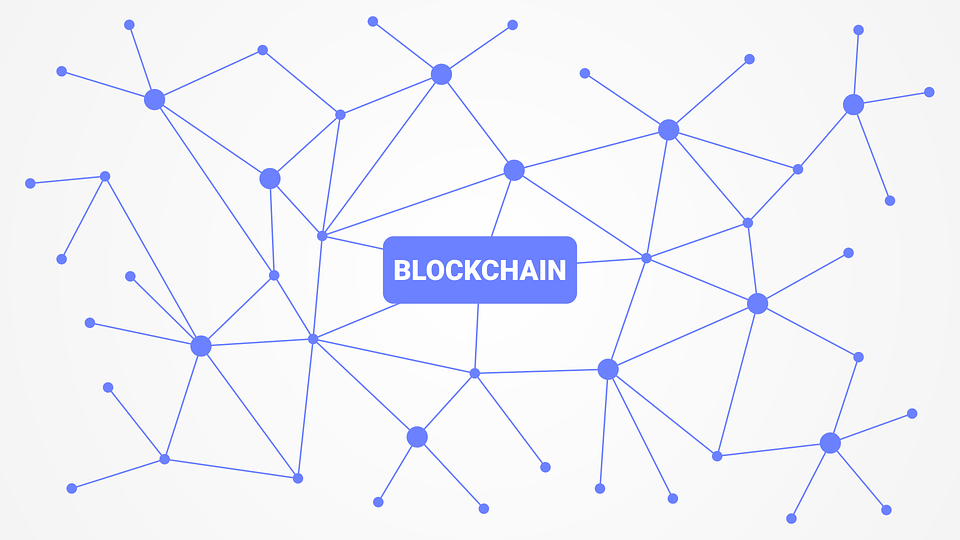
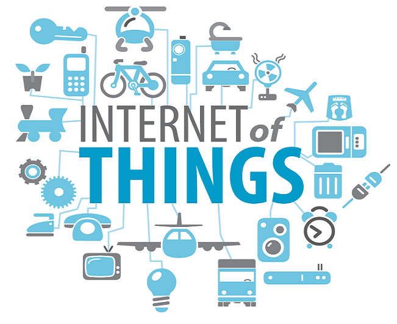

Es un Lenguaje Markup (de hecho, las siglas de HTML significan Hyper Text Markup Language) usado para estructurar y presentar el contenido para la web. Es uno de los aspectos fundamentales para el funcionamiento de los sitios, pero no es el primero. Es de hecho la quinta revisión del estándar que fue creado en 1990.
Con HTML5, también entra en desuso el formato XHTML, dado que ya no sería necesaria su implementación. HTML4 fue “declarado” el lenguaje oficial de la web en el año 2000, y tomó una década para comenzar a implementar el desarrollo de su nueva revisión. Esta nueva generación de HTML, se dice, pronto dominará el desarrollo en internet, pero introduce algunos cambios importantes que veremos dentro de algunas líneas.
Con HTML5, los navegadores como Firefox, Chrome, Explorer, Safari y más pueden saber cómo mostrar una determinada Página Web , saber dónde están los elementos, dónde poner las imágenes, dónde ubicar el texto. En este sentido, el HTML5 no se diferencia demasiado de su predecesor. Por tanto, a lo largo de los años las versiones de HTML han evolucionado: HTML 2.0 (1995), HTML 4.0 (1997), XHTML (2000), HTML5 (2014), etc. con el objetivo de adaptarse a los nuevos tiempos y así dar soporte a nuevas necesidades (estandarización de los sistemas de audio, vídeo, etc).
¿Cuáles son sus novedades?
Conozca más sobre el tema en estos videos:
CSS son las siglas de Cascading Style Sheets - Hojas de Estilo en Cascada - que es un lenguaje que describe la presentación de los documentos estructurados en hojas de estilo para diferentes métodos de interpretación, es decir, describe cómo se va a mostrar un documento en pantalla, por impresora, por voz (cuando la información es pronunciada a través de un dispositivo de lectura) o en dispositivos táctiles basados en Braille.
¿Para qué sirve?
CSS es una especificación desarrollada por el W3C (World Wide Web Consortium) para permitir la separación de los contenidos de los documentos escritos en HTML, XML, XHTML, SVG, o XUL de la presentacin del documento con las hojas de estilo, incluyendo elementos tales como los colores, fondos, márgenes, bordes, tipos de letra..., modificando as la apariencia de una página web de una forma más sencilla, permitiendo a los desarrolladores controlar el estilo y formato de sus documentos.
¿Cómo funciona?
El lenguaje CSS se basa en una serie de reglas que rigen el estilo de los elementos en los documentos estructurados, y que forman la sintaxis de las hojas de estilo. Cada regla consiste en un selector y una declaración, esta última va entre corchetes y consiste en una propiedad o atributo, y un valor separados por dos puntos.
Versiones CSS
Existen varias versiones: CSS1 y CSS2, la CSS3 está todavía en desarrollo por el CSS WG (Cascading Style Sheets Working Group).
Es un lenguaje con muchas posibilidades, utilizado para crear pequeños programas que luego son insertados en una página web y en programas más grandes, orientados a objetos mucho más complejos. Con Javascript podemos crear diferentes efectos e interactuar con nuestros usuarios.
Javascript es un lenguaje que puede ser utilizado por profesionales y para quienes se inician en el desarrollo y diseño de sitios web. No requiere de compilación ya que el lenguaje funciona del lado del cliente, los navegadores son los encargados de interpretar estos códigos. La estandarización de Javascript comenzó en conjunto con ECMA en Noviembre de 1996. Es adoptado este estándar en Junio de 1997 y luego también por la “Internacional Organization for Standardization” (ISO). El DOM por sus siglas en inglés “Modelo de Objetos del Documento” fue diseñado para evitar incompatibilidades.
¿Cómo nace Javascript?
Javascript nació con la necesidad de permitir a los autores de sitio web crear páginas que permitan intercambiar con los usuarios, ya que se necesitaba crear webs de mayor complejidad. El HTML solo permitía crear páginas estáticas donde se podía mostrar textos con estilos, pero se necesitaba interactuar con los usuarios.
¿Dónde puedo ver funcionando Javascript?
Entre los diferentes servicios que se encuentran realizados con Javascript en Internet se encuentran:

Son aplicaciones web que se cargan como páginas web o sitios web normales, pero que pueden ofrecer al usuario funcionalidades como trabajar sin conexión, notificaciones push y acceso a hardware del dispositivo tradicionalmente disponible solo para aplicaciones móviles nativas . Las PWA son una tecnología emergente que combina los estándares abiertos de la web que ofrecen los navegadores modernos para brindar los beneficios de una experiencia móvil enriquecida .
¿Qué es una Progressive Web App?
Una Progressive Web App es:
El nombre Progressive Web App ya nos da una pista de su naturaleza. Una de las características fundamentales es que son progresivas, lo que significa que incrementan su funcionalidad según las características del dispositivo en el que se ejecutan. Respecto a la parte de web, hace referencia a que para su creación se utilizan lenguajes de programación como HTML, CSS o JavaScript. Realmente en esencia son páginas web, sin embargo, la parte final del nombre se refiere a que se comportan como aplicaciones nativas, adaptándose a los dispositivos en los que se visualizan.
Las Progressive Web Apps integran lo mejor de una web y lo mejor de una aplicación móvil nativa, adaptándose por completo al dispositivo desde el que se ejecutan, independientemente del sistema operativo que utilice (ya sea un Smartphone o una Tablet).
Conozca más sobre el tema en estos videos
La Inteligencia Artificial es una combinación de la ciencia del computador, fisiología y filosofía, tan general y amplio como eso, es que reune varios campos (robótica, sistemas expertos, por ejemplo), todos los cuales tienen en común la creación de máquinas que pueden pensar.
La de idea construir una máquina que pueda ejecutar tareas percibidas como requerimientos de inteligencia humana es un atractivo. Las tareas que han sido estudiadas desde este punto de vista incluyen juegos, traducción de idiomas, comprensión de idiomas, diagnóstico de fallas, robótica, suministro de asesoría experta en diversos temas. Es así como los sistemas de administración de base de datos cada vez más sofisticados, la estructura de datos y el desarrollo de algoritmos de inserción, borrado y locación de datos, así como el intento de crear máquinas capaces de realizar tareas que son pensadas como típicas del ámbito de la inteligencia humana, acuñaron el término Inteligencia Artificial en 1956.
La Inteligencia Artificial trata de conseguir que los ordenadores simulen en cierta manera la inteligencia humana. Se acude a sus técnicas cuando es necesario incorporar en un sistema informático,conocimiento o características propias del ser humano. Podemos interrogar a algunas bases de datos de Internet en lenguaje natural, o incluso charlar con ellas nuestro idioma, porque por detrás se está ejecutando un programa de Inteligencia Artificial.
Otras herramientas inteligentes pueden utilizarse para escrutar entre los millones de datos que se generan en un banco en busca de patrones de comportamiento de sus clientes o para detectar tendencias en los mercados de valores.
Machine Learnings es una disciplina científica del ámbito de la Inteligencia Artificial que crea sistemas que aprenden automáticamente. Aprender en este contexto quiere decir identificar patrones complejos en millones de datos. La máquina que realmente aprende es un algoritmo que revisa los datos y es capaz de predecir comportamientos futuros. Automáticamente, también en este contexto, implica que estos sistemas se mejoran de forma autónoma con el tiempo, sin intervención humana. Veamos cómo funciona.
¿Por qué es importante?
La cantidad de datos que se generan actualmente en las empresas se está incrementado de forma exponencial. Extraer información valiosa de ellos supone una ventaja competitiva que no se puede menospreciar. Es una gran oportunidad a la que se le debe prestar especial atención. La gran ventaja del machine learning es que actualmente no hace falta ser un gurú de los datos para poder aprovechar este tipo de tecnologías. Existen en el mercado herramientas de uso muy sencillo y asequibles económicamente para cualquier tamaño de empresa que permiten hacer predicciones
Aprendizaje profundo (en inglés,deep learning) es un conjunto de algoritmos de clase aprendizaje automático (en inglés, machine learning) que intenta modelar abstracciones de alto nivel en datos usando arquitecturas compuestas de transformaciones no lineales múltiples. El aprendizaje profundo es parte de un conjunto más amplio de métodos de aprendizaje automático basados en asimilar representaciones de datos.
Una observación (ejemplo: una imagen) puede ser representada en muchas formas (por ejemplo, un vector de píxeles), pero algunas representaciones hacen más fácil aprender tareas de interés (ejemplo: "¿es esta imagen una cara humana?") sobre la base de ejemplos, y la investigación en este área intenta definir qué representaciones son mejores y cómo crear modelos para reconocer estas representaciones. Varias arquitecturas de aprendizaje profundo, como redes neuronales profundas, redes neuronales profundas convolucionales, y redes de creencia profundas, han sido aplicadas a campos como visión por computador, reconocimiento automático del habla, y reconocimiento de señales de audio y música, y han mostrado producir resultados en varias tareas.
Las Redes Neuronales son un campo muy importante dentro de la Inteligencia Artificial. Inspirándose en el comportamiento conocido del cerebro humano (principalmente el referido a las neuronas y sus conexiones), trata de crear modelos artificiales que solucionen problemas difíciles de resolver mediante técnicas algorítmicas convencionales.Estos sistemas aprenden y se forman a sí mismos, en lugar de ser programados de forma explícita, y sobresalen en áreas donde la detección de soluciones o características es difícil de expresar con la programación convencional.
Son un modelo computacional basado en un gran conjunto de unidades neuronales simples (neuronas artificiales), de forma aproximadamente análoga al comportamiento observado en los axones de las neuronas en los cerebros biológicos. Cada unidad neuronal está conectada con muchas otras y los enlaces entre ellas pueden incrementar o inhibir el estado de activación de las neuronas adyacentes. Cada unidad neuronal, de forma individual, opera empleando funciones de suma. Puede existir una función limitadora o umbral en cada conexión y en la propia unidad, de tal modo que la señal debe sobrepasar un límite antes de propagarse a otra neurona.
Las criptomonedas son monedas virtuales. Pueden ser intercambiadas y operadas como cualquier otra divisa tradicional, pero están fuera del control de los gobiernos e instituciones financieras. Existe un gran número de criptodivisas disponibles, todas con sus propias características y aplicaciones. Las que tienen mayor capitalización de mercado son -al menos por ahora- una minoría, que incluye bitcoin, bitcoin cash, ether, litecoin, ripple y dash.
En los sistemas de criptomonedas, se garantiza la seguridad, integridad y equilibrio de sus estados de cuentas (contabilidad) por medio de un entramado de agentes (transferencia de archivo segmentada o transferencia de archivo multifuente) que se verifican (desconfían) mutuamente llamados mineros, que son, en su mayoría, público en general y protegen activamente la red (el entramado) al mantener una alta tasa de procesamiento de algoritmos, con la finalidad de tener la oportunidad de recibir una pequeña propina, que se reparte de manera aleatoria
¿Qué es minar criptomonedas?
Minar criptomonedas es el proceso a través del cual las transacciones de criptomoneda se verifican y se ofrecen nuevas unidades. El objetivo de los mineros es recopilar las últimas transacciones en bloques (es decir, conjuntos de transacciones verificadas) y encontrar una solución a un complejo algoritmo. Haciendo esto se obtiene una recompensa: una cantidad fija de criptomoneda. Esta cantidad varía según la criptomoneda en la que se trabaje; la recompensa de bitcoin, por ejemplo, es actualmente de 12,5 bitcoins.
La solución a este algoritmo supone un proceso continuo y depende de los resultados de algoritmos anteriores para poder realizar el siguiente cálculo. Del mismo modo, la dificultad del algoritmo puede ser (y es) ajustada frecuentemente, con el fin de hacer que el trabajo de los mineros sea constante -y aunque la capacidad de procesamiento vaya mejorando. Esto se asemeja al ritmo al que materias primas como el oro entran en el mercado.

Es una estructura de datos en la que la información contenida se agrupa en conjuntos (bloques) a los que se les añade metainformaciones relativas a otro bloque de la cadena anterior en una línea temporal, de manera que gracias a técnicas criptográficas, la información contenida en un bloque sólo puede ser repudiada o editada modificando todos los bloques posteriores. Esta propiedad permite su aplicación en entorno distribuido de manera que la estructura de datos blockchain puede ejercer de base de datos pública no relacional que contenga un histórico irrefutable de información. El tipo de algoritmo más utilizado es el de prueba de trabajo en el que hay un proceso abierto competitivo y transparente de validación de las nuevas entradas llamada minería.
En la práctica ha permitido, gracias a la criptografía asimétrica y las funciones de resumen o hash, la implementación de un registro contable (ledger) distribuido que permite soportar y garantizar la seguridad de dinero digital. Siguiendo un protocolo apropiado para todas las operaciones efectuadas sobre la blockchain, es posible alcanzar un consenso sobre la integridad de sus datos por parte de todos los participantes de la red sin necesidad de recurrir a una entidad de confianza que centralice la información.
Por ello se considera una tecnología en la que la "verdad" (estado confiable del sistema) es construída, alcanzada y fortalecida por los propios miembros; incluso en un entorno en el que exista una minoría de nodos en la red con comportamiento malicioso (nodos sybil) dado que, en teoría, para comprometer los datos, un atacante requeriría de una mayor potencia de cómputo y presencia en la red que el resultante de la suma de todos los restantes nodos combinados. Por las razones anteriores, la tecnología blockchain es especialmente adecuada para escenarios en los que se requiera almacenar de forma creciente datos ordenados en el tiempo, sin posibilidad de modificación ni revisión y cuya confianza pretenda ser distribuída en lugar de residir en una entidad certificadora.
Este enfoque tiene diferentes aspectos:
El concepto de ciberseguridad nació con las primeras necesidades de proteger los sistemas informáticos de las empresas de ataques maliciosos que pudieran poner en riesgo el correcto funcionamiento de dichos sistemas, inhabilitando los mismos o comprometiendo su funcionamiento. De todas formas, ese no es el único riesgo, ya que los ciberataques en muchas ocasiones no tienen como objetivo el inutilizar los sistemas informáticos, sino robar datos de carácter estratégico para la empresa para procurar al atacante un beneficio económico.
Es el área relacionada con la informática y la telemática que se enfoca en la protección de la infraestructura computacional y todo lo relacionado con esta y, especialmente, la información contenida en una computadora o circulante a través de las redes de computadoras. Para ello existen una serie de estándares, protocolos, métodos, reglas, herramientas y leyes concebidas para minimizar los posibles riesgos a la infraestructura o a la información.
La ciberseguridad implica dotarse de sistemas robustos capaces de actuar antes, durante y después. No solo para prevenir. También para aumentar la confianza de los clientes y del mercado , minimizando cualquier riesgo reputacional que pueda tener un impacto reseñable en el negocio.
Contar con sólidos sistemas de ciberseguridad no es hoy una opción. Es una exigencia de todos: consumidores, inversores, reguladores y el conjunto de la sociedad. Y en su gestión deben implicarse todas las esferas de la organización
La realidad virtual se podría definir como un sistema informático que genera en tiempo real representaciones de la realidad, que de hecho no son más que ilusiones ya que se trata de una realidad perceptiva sin ningún soporte físico y que únicamente se da en el interior de los ordenadores.
La simulación que hace la realidad virtual se puede referir a escenas virtuales, creando un mundo virtual que sólo existe en el ordenador de lugares u objetos que existen en la realidad. También permite capturar la voluntad implícita del usuario en sus movimientos naturales proyectándolos en el mundo virtual que estamos generando, proyectando en el mundo virtual movimientos reales.
Además, también nos permite hundirnos completamente en un mundo virtual, desconectando los sentidos completamente de la realidad teniendo la sensación la persona que está dentro de que la realidad corresponde en el mundo virtual. Las aplicaciones que en la actualidad encontramos de la realidad virtual a actividades de la vida cotidiana son muchas y diversas. Hay que destacar: la reconstrucción de la herencia cultural, la medicina, la simulación de multitudes y la sensación de presencia.
La reconstrucción de la herencia cultural consiste en la recuperación a través de la simulación de piezas únicas de la antigüedad que han sido destruidas o se encuentran degradadas. En algunas, a partir de unos pocos restos se pueden simular piezas enteras. Además, la realidad virtual permite mostrar la pieza en perfecto estado en diversos lugares del mundo a la vez, e incluso permite crear museos enteros con piezas virtuales. La aplicación en la medicina la encontramos en la simulación virtual del cuerpo humano . A partir de imágenes de nuestro cuerpo, se puede hacer la recreación en 3D del paciente, cosa que facilita la elaboración de un diagnóstico, o la simulación de operaciones en caso que sea necesario.
Es el término que se usa para definir la visión de un entorno físico del mundo real, a través de un dispositivo tecnológico. Este dispositivo o conjunto de dispositivos, añaden información virtual a la información física ya existente; es decir, una parte sintética virtual a la real. De esta manera; los elementos físicos tangibles se combinan con elementos virtuales, creando así una realidad aumentada en tiempo real.
La realidad aumentada es diferente de la realidad virtual: sobre la realidad material del mundo físico monta una realidad visual generada por la tecnología, en la que el usuario percibe una mezcla de las dos realidades; en cambio, en la realidad virtual el usuario se aísla de la realidad material del mundo físico para sumergirse en un escenario o entorno totalmente virtual. Con la ayuda de la tecnología; por ejemplo, añadiendo la visión por un computador y reconocimiento de objetos, la información sobre el mundo real alrededor del usuario, se convierte en interactiva y digital.
La información artificial sobre el medio ambiente y los objetos puede ser almacenada y recuperada como una capa de información en la parte superior de la visión del mundo real. La realidad aumentada de investigación explora la aplicación de imágenes generadas por ordenador en tiempo real a secuencias de vídeo como una forma de ampliar el mundo real.
La investigación incluye a este respecto el uso de pantallas colocadas en la cabeza, un monitor virtual colocado en la retina para mejorar la visualización y la construcción de ambientes controlados a partir de sensores y actuadores.Recientemente, el término realidad aumentada se ha difundido por el creciente interés del público en general siendo utilizada en distintos campos, como educación, ocio, marketing o arquitectura, entre otros.
La realidad mixta (RM), también llamada a veces realidad híbrida, es la combinación de realidad virtual y realidad aumentada. Esta combinación permite crear nuevos espacios en los que interactúan tanto objetos y/o personas reales como virtuales. Es decir, se puede considerar como una mezcla entre la realidad, realidad aumentada, virtualidad aumentada y realidad virtual.
El término realidad mixta no debe confundirse con el de realidad aumentada o RA. La realidad aumentada genera los estímulos a tiempo real para la interacción del usuario, los cuales se superponen sobre el entorno entorno físico de este, mientras que la realidad mixta no sólo permite la interacción del usuario con el entorno virtual sino que también permite que objetos físicos del entorno inmediato del usuario sirvan como elementos de interacción con el entorno virtual.
El concepto de realidad mixta como cualquier espacio entre los extremos del continuo de la virtualidad. Este continuo de la virtualidad se extiende desde el mundo completamente real hasta el entorno completamente virtual, encontrándose entre medio de estos la realidad aumentada y realidad virtua. la realidad mixta permite la incorporación de objetos gráficos generados por ordenador en una escena tridimensional del mundo real o bien la incorporación de objetos reales en un mundo virtual
Las principales características son tres:

Internet de las cosas (en inglés, Internet of Things, abreviado IoT; IdC, por sus siglas en español ) es un concepto que se refiere a la interconexión digital de objetos cotidianos con Internet.
El concepto de Internet de las cosas fue propuesto por Kevin Ashton en el Auto-ID Center del MIT en 1999, donde se realizaban investigaciones en el campo de la identificación por radiofrecuencia en red (RFID) y tecnologías de sensores.
Alternativamente, Internet de las cosas es la conexión de Internet con más cosas u objetos que con personas. También, se suele conocer como Internet de todas las cosas o Internet en las cosas. Si los objetos de la vida cotidiana tuvieran incorporadas etiquetas de radio, podrían ser identificados y gestionados por otros equipos, de la misma manera que si lo fuesen por seres humanos.
Por ejemplo, si los libros, termostatos, refrigeradores, la paquetería, lámparas, botiquines, partes automotrices, entre otros, estuvieran conectados a Internet y equipados con dispositivos de identificación, no existirían, en teoría, artículos fuera de stock o medicinas caducas; sabríamos exactamente la ubicación, cómo se consumen en el mundo; el extravío sería cosa del pasado, y sabríamos qué está encendido y qué está apagado en todo momento.
La ingeniería mecatrónica es una disciplina que sirve para diseñar y desarrollar productos que involucren sistemas de control para el diseño de productos o procesos inteligentes, lo cual busca crear maquinaria más compleja para facilitar las actividades del ser humano a través de procesos electrónicos en la industria mecánica, principalmente.
Esta disciplina une la ingeniería mecánica, ingeniería electrónica, ingeniería de control e ingeniería informática. Debido a que combina varias ingenierías en una sola, su punto fuerte es la versatilidad.
Un consenso común es describir a la mecatrónica como una disciplina integradora de las áreas de mecánica, electrónica e informática cuyo objetivo es proporcionar mejores productos, procesos y sistemas industriales. La mecatrónica no es, por tanto, una nueva rama de la ingeniería, sino un concepto recientemente desarrollado que enfatiza la necesidad de integración y de una interacción intensiva entre diferentes áreas de la ingeniería.
Con base en lo anterior, se puede hacer referencia a la definición propuesta por J. A. Rietdijk: "Mecatrónica es la combinación sinérgica de la ingeniería mecánica de precisión, de la electrónica, del control automático y de los sistemas para el diseño de productos y procesos", la cual busca crear maquinaria más compleja para facilitar las actividades del ser humano a través de procesos electrónicos en la industria mecánica principalmente.
La impresión 3D es cualquiera de varios procesos en los que el material se une o solidifica bajo el control de la computadora para crear un objeto tridimensional , con material que se agrega (como moléculas líquidas o granos de polvo fusionados).
La impresión 3D se utiliza tanto en prototipos rápidos como en fabricación aditiva (AM). Los objetos pueden ser de casi cualquier forma o geometría y generalmente se producen utilizando datos de modelos digitales de un modelo 3D u otra fuente de datos electrónicos, como un archivo de Archivo de Fabricación Aditiva (AMF) (generalmente en capas secuenciales). Hay muchas tecnologías diferentes , como la estereolitografía(SLA) o modelado de depósitos fusionados (FDM). Por lo tanto, a diferencia del material eliminado de un stock en el proceso de mecanizado convencional, la impresión 3D o AM crea un objeto tridimensional a partir de un modelo de diseño asistido por computadora (CAD) o archivo AMF, generalmente añadiendo sucesivamente material capa por capa.
El término "impresión 3D" originalmente se refería a un proceso que deposita un material aglutinante sobre un lecho de polvo con cabezales de impresora de inyección de tinta capa por capa. Más recientemente, el término se está utilizando en la lengua vernácula popular para abarcar una variedad más amplia de técnicas de fabricación aditiva. Los Estados Unidos y las normas técnicas mundiales utilizan el término oficial de fabricación aditiva en este sentido más amplio.
A principios de la década de 2010, los términos impresión 3D y fabricación aditiva evolucionaron sentidos en los que se alternaban términos genéricos para las tecnologías AM, uno utilizado en la lengua vernácula popular por las comunidades de consumidores y los medios, y el otro utilizado más formalmente por AM industrial -utilizar fabricantes de piezas, fabricantes de máquinas AM y organizaciones de estándares técnicos globales. Hasta hace poco, el término impresión 3D se ha asociado con máquinas de bajo precio o capacidad.
En telecomunicaciones, 5G son las siglas utilizadas para referirse a la quinta generación de tecnologías de telefonía móvil. Es la sucesora de la tecnología 4G. Actualmente se encuentra sin estandarizar y las empresas de telecomunicación están desarrollando sus prototipos. Está previsto que su uso común sea en 2020.
La compañía sueca Ericsson aún no ha conseguido alcanzar velocidades de 5 Gbps reales, con demostraciones en directo del estándar previo a la tecnología de red (preestándar) 5G. La red inalámbrica 5G abordará la evolución más allá del internet móvil, y alcanzará al Internet de las Cosas masivo hacia 2020. La evolución más notable en comparación con las redes 4G y 4.5G (LTE avanzado) actuales es que, aparte del aumento en la velocidad de los datos, los nuevos casos de uso del Internet de las Cosas y de la comunicación requerirán nuevos tipos de desempeño mejorado; como la “latencia baja”, que brinda una interacción en tiempo real a los servicios que utilizan la nube, lo que resulta clave, por ejemplo, para los vehículos autónomos.
En noviembre de 2014, Huawei anuncia la firma de un acuerdo con la operadora móvil rusa Megafon para estandarizar y desarrollar redes 5G de prueba, en vistas a la Copa Mundial de Fútbol de 2018.
En febrero de 2017, la Unión Internacional de Telecomunicaciones (UIT) dependiente de Naciones Unidas reveló alguna de las especificaciones de la tecnología 5G. Entre ellas se incluyen: velocidades de descarga mínimas de 20 Gbps y 10 Gbps de subida, y una latencia de 4 ms. Se pretende optimizar los dispositivos para hacerlo lo más eficiente posible para el Internet de las cosas. Está previsto que todo el mundo utilice esa conectividad en 2025.
HTML5 es un lenguaje de marcado usado para estructurar y presentar el contenido para la web. HTML5 trae nuevas etiquetas como, header, section, article, entre otras.
CSS3 es el que se encarga de dar estilo a las páginas webs, CSS3 es la última evolución del CSS y trae consigo novedades como: esquinas redondeadas, sombras gradientes, transiciones, efectos 3D entre otros.
JavaScript es un lenguaje de programación interpretado ya que su código no necesita ser pre procesado mediante un compilador. JS es un lenguaje en base al cliente, y es implementado como parte de navegador web, su uso más característico es la implementación del (DOM).
Progresive Webs Apps es un término que se le da a una nueva generación de aplicaciones que incrementan su funcionalidad, en otras palabras son páginas webs que se comportan como aplicaciones nativas.
Inteligencia Artificial es la simulación de procesos de inteligencia humana por parte de máquinas, especialmente sistemas informáticos.
Criptomoneda es un medio de intercambio digital, que se popularizo en el 2009 con la aparición del bitcoin.
Blockchain es una estructura de datos en la que la información contenida se agrupa en conjuntos de bloques.
Cyberseguridad es el área relacionada con la informática y la telemática que se enfoca en la protección de todo lo relacionado con la información contenida en un computador a través de la red.
Realidad virtual consiste en crear un entorno virtual que simule o replique un lugar existente o imaginario, permitiendo interactuar con los elementos allí ubicados. Consiste en simular un entorno tridimensional y adicionalmente, con la posibilidad de incorporar información sensorial: audio, movimiento de las manos con el objetivo final de conseguir que el usuario sienta que está en un lugar dado y pueda interactuar con él.
Realidad Aumentadaconsiste en la mezcla de contenido digital con contenido físico para construir una realidad mixta en tiempo real.
Realidad Mixta es la combinacion de la realidad virtual con la realidad aumentada, la cual permite interactuar con los objetos y personas.
El Internet de las Cosas(IOT) consiste en que todos los objetos cotidiano se conecten a la red, como por jemplos: reloj,vestimenta, entre otros.
La Mecatrónica surge de la combinación sinérgica de distintas ramas de la Ingeniería. Su principal propósito es el análisis y diseño de productos y de procesos de manufactura automatizados.
3d Printing es la creacion de objetos tridimensional. la impresion 3d e utiliza tanto en prototipos rápidos como en fabricación aditiva (AM).
Tecnologia 5g es una evolucion de la 4g, eso quiere decir que la transferencia de informacion va hacer mucho mas rapido. Esta tecnologia esta prevista que pueda ser utilizada por todo el mundo en el 2025.
15-EISM-1-173